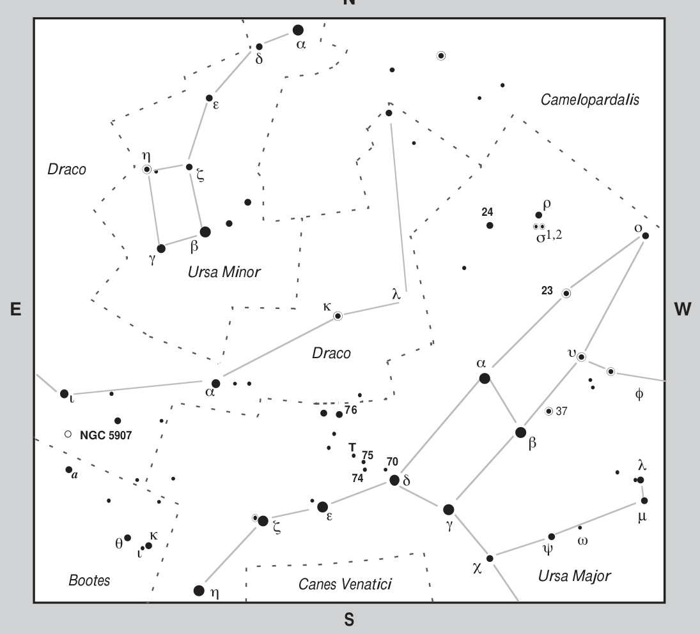

刀锋星系 · Splinter Galaxy (NGC 5907)

The universe harbors celestial objects that challenge our perception of cosmic architecture, and few do so as dramatically as NGC 5907. This extraordinarily thin edge-on spiral galaxy in Draco has captivated astronomers since William Herschel first logged it on May 5, 1788—describing it as "Pretty bright, faint near the middle, 8 or 10′ long, 1.2′ wide." Nearly two and a half centuries later, this cosmic sliver continues to reveal secrets about galactic evolution, dark matter, and the violent mergers that shape the cosmos.
宇宙中存在着挑战我们认知极限的天体，而 NGC 5907 便是其中最具戏剧性的一员。这颗位于天龙座的极度纤细侧向旋涡星系，自威廉·赫歇尔于1788年5月5日首次记录以来便令天文学家着迷——他将其描述为"相当明亮，中部较暗，长约8至10角分，宽1.2角分。"近两个半世纪后的今天，这道宇宙刀锋仍在不断揭示关于星系演化、暗物质以及塑造宇宙的剧烈碰撞事件的秘密。
"Commonly called the Splinter or Knife-Edge Galaxy (I call it the Cat Scratch Galaxy), NGC 5907 will be a challenge for small-telescope users who are not under a dark sky."
"该星系俗称'木屑星系'或'刀锋星系'（我个人称其为'猫抓星系'），对于非暗空环境下的小型望远镜观测者而言颇具挑战性。"
A Celestial Needle in the Cosmic Haystack
NGC 5907 is a moderately large and extremely thin edge-on galaxy positioned merely 1° northeast of the more famous edge-on lenticular galaxy NGC 5866 (often suspected to be Messier 102). What makes this galaxy extraordinary is its orientation—we see it inclined only about 2° from true edge-on, making it appear as a razor-sharp line of light bisecting the darkness of space. This extreme tilt means that thick, opaque dust lanes almost completely obscure its tiny nuclear bulge, creating the dramatic "splinter" appearance that has made this galaxy a favorite among amateur astronomers and astrophotographers alike.
NGC 5907是一颗位于天龙座的中等规模、极度纤薄的侧向星系，仅位于更著名的侧向透镜状星系NGC 5866（常被推测为梅西耶天体102）东北方向约1度处。这颗星系的非凡之处在于其姿态——我们观测到其倾角仅约2度便达到完全侧向，使其看起来如同一道将太空黑暗一分为二的锋锐光线。这种极端倾斜意味着浓密不透明的尘埃带几乎完全遮蔽了其微小的核球，造就了"刀锋"般的戏剧性外观，使其成为业余天文学家和天体摄影师的宠儿。
"In true physical size, NGC 5907 is a splendid system: Spanning about 120,000 light-years in length and having a mass of 230 billion Suns, the galaxy is one of the largest edge-on systems visible on the sky."
"从真实物理尺度来看，NGC 5907是一个壮观的星系：其长度横跨约12万光年，质量达2,300亿倍太阳质量，是天空中可见的最大侧向星系之一。"
The Spiral Structure Revealed
Despite the dust obscuration, careful observation reveals the galaxy's magnificent spiral architecture. Its outermost spiral arms can be glimpsed at either end of the spindle, with the northern arm opening toward the observer and the southern arm receding. Spectroscopic observations provide definitive proof of the galaxy's rotation—the south end of the spindle is approaching us, confirming that the spiral arms trail behind as the galaxy rotates. Radio observations have mapped the rotation curve in exquisite detail, showing that the rotation velocity increases steeply within the central ~10 arcseconds (approximately 1,600 light-years), after which it remains nearly flat until reaching 65,000 light-years, beyond which it gradually declines. The galaxy as a whole recedes from us at a velocity of 780 km/sec.
尽管存在尘埃遮挡，仔细观测仍能揭示这个星系壮丽的旋涡结构。其最外侧的旋臂可在纺锤体两端被观测到——北侧旋臂朝向观测者展开，南侧旋臂则背向延伸。光谱观测提供了星系旋转的确切证据：纺锤体南端正朝向我们接近，证实旋臂在星系旋转时呈拖曳状。射电观测以极高精度绘制了旋转曲线，显示旋转速度在中心约10角秒（相当于1,600光年）范围内急剧上升，此后基本保持平坦直至6.5万光年，超出该范围后逐渐下降。该星系整体正以780公里/秒的速度远离我们。
"In the late nineteenth century, the Third Earl of Rosse detected and drew a 'ray, very much extend, parallel to [NGC 5907], and close preceding it.' Although Dreyer gave it a separate NGC number (5906), the 'ray' is nothing more than the side of NGC 5907 just to the west of the dust lane."
"十九世纪末，第三代罗斯伯爵观测并绘制了一条'与[NGC 5907]平行且紧邻其前方的、异常延展的光束'。尽管德雷尔为它单独编录了NGC编号（5906），但这道'光束'实际上只是NGC 5907位于尘埃带西侧的盘面部分。"
A Galaxy with a Violent Past
Perhaps the most fascinating aspect of NGC 5907 is its turbulent history of galactic cannibalism. Unlike many large spiral galaxies that contain roughly equal populations of giant and dwarf stars in their halos, NGC 5907's halo appears dramatically deficient in giant stars. When astronomers used the Hubble Space Telescope to image the extended halo, they expected to find more than 100 giant stars but found only one candidate—the halo dwarfs outshine the giants by a factor of 20. This anomalous composition led astronomers to propose that the giant depletion resulted from a long-ago collision with a companion elliptical galaxy that eventually merged with NGC 5907.
也许 NGC 5907 最引人入胜的方面在于其充满星系吞噬暴力的历史。与许多晕层中巨星与矮星数量大致相当的大型旋涡星系不同，NGC 5907 的晕层中巨星含量明显匮乏。当天文学家利用哈勃太空望远镜对延展晕层进行成像时，他们预期会发现超过100颗巨星，却仅找到一颗候选体——晕层中矮星的亮度甚至超过巨星20倍。这种异常组成促使天文学家提出理论：巨星缺失源于远古时期与一个伴生椭圆星系的碰撞，后者最终与 NGC 5907 并合。
New evidence published in the Astrophysical Journal in 2008 by David Martinez-Delgado and colleagues from the Instituto de Astrofísica de Canarias presented stunning deep images from a small robotic observatory in New Mexico. These images revealed, for the first time, an extended stellar tidal stream wrapping around NGC 5907—arc structures forming tenuous loops extending more than 150,000 light-years from the galaxy. The researchers described this as "an excellent example of how low-mass satellite accretion can produce an interwoven, rosette-like structure of debris dispersed in the halo of its host galaxy."
2008年，加那利天体物理研究所的大卫·马丁内斯-德尔加多及其同事在《天体物理学杂志》上发表了新证据。新墨西哥州小型自动化天文台拍摄的深度图像首次揭示了环绕 NGC 5907 的延伸恒星潮汐流——弧形结构以纤细环状形态延伸至星系外逾15万光年。研究人员将其描述为"低质量卫星吸积如何在宿主星系晕中产生交织的玫瑰状碎片结构的绝佳范例"。
HI observations have confirmed a large warped disk of interstellar gas in the galaxy's outermost regions—a telltale sign of gravitational disturbance from a past merger event. These arcs and streams probably represent the ghostly debris trail of a dwarf galaxy that once orbited NGC 5907 but was gradually torn apart by tidal forces. Over approximately 4 billion years, the scattered remains ultimately merged with NGC 5907, leaving behind only these faint traces as evidence of the cosmic violence that shaped this magnificent galaxy.
氢原子（HI）观测已证实该星系最外围区域存在扭曲的大尺度星际气体盘——这是过去并合事件留下的引力扰动的明确信号。这些弧形结构和潮汐流很可能是一个曾环绕 NGC 5907 运行的矮星系被
🔒 受限于篇幅，本文仅展示部分样章。O'Meara 先生完整的观测手记、实测数据及未公开的独家配图，请参阅原著双语典藏版。
👉 立即在闲鱼获取《DEEP-SKY COMPANIONS》中英双语高清典藏版